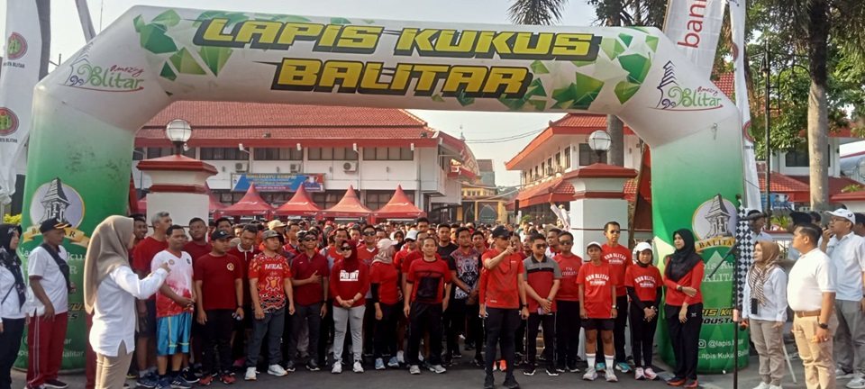

KembaliFisip Fun Run
Fakultas Ilmu Sosial dan Politik Universitas Balitar menggelar kegiatan Fisip Fun Run yang terbuka untuk umum sebagai ajang olahraga sekaligus mempererat kebersamaan antar peserta.
Acara ini akan dilaksanakan pada hari Sabtu, 9 November 2024, mulai pukul 05.00 WIB hingga selesai, bertempat di Aula Terbuka Universitas Balitar Blitar.
Biaya pendaftaran sebesar Rp50.000 dengan berbagai fasilitas yang telah disediakan. Peserta akan mendapatkan medali finisher untuk 100 peserta pertama, serta berbagai keuntungan seperti doorprize menarik, paket kegiatan, refreshment, dan nomor dada (BIB).
Pendaftaran dapat dilakukan secara daring melalui tautan berikut: https://forms.gle/9sTZrEyk526uiJF7A
Selain kegiatan lari, acara ini juga dimeriahkan dengan bazar Usaha Mikro, Kecil, dan Menengah (UMKM) serta penampilan bintang tamu yang akan menambah kemeriahan suasana.